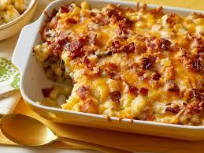

Recipe
- 1 (2 pound) package Ore Ida Shredded Hash Browns Potatoes
- ½ cup Butter, with salt
- 1 teaspoon Salt, table
- ½ teaspoon Spices, pepper, black
- ½ cup Onions, raw
- 1 (10.75 ounce) can Soup, cream of chicken, canned, condensed, commercial
- 2 cups Cheese, cheddar
instructions
- Preheat oven to 350 degrees F (175 degrees C). Spray one 9x13 inch pan with non-stick cooking spray.
- In a large bowl, combine the potatoes, butter, salt, pepper, onions, soup and cheese. Gently mix and pour into prepared pan or dish.
- Bake in the preheated oven until browned, about 35 minutes.